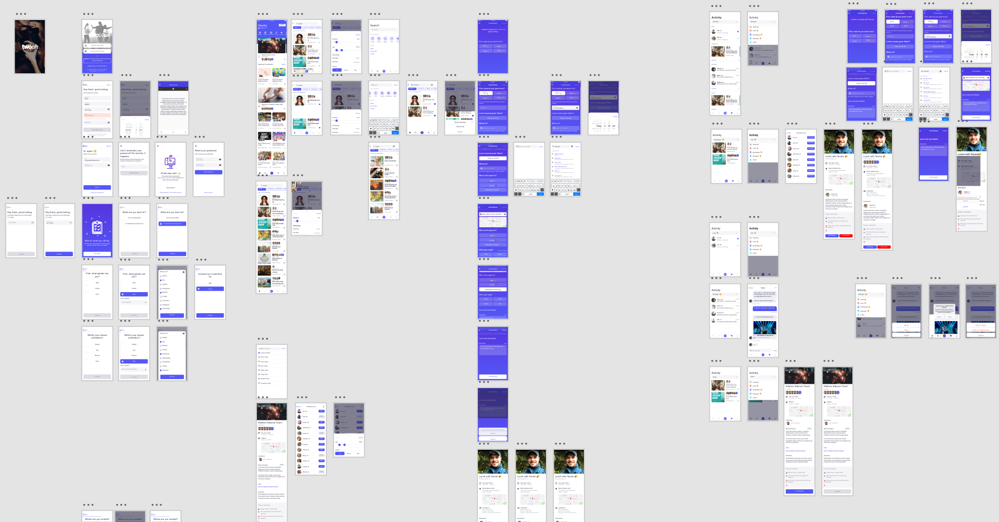
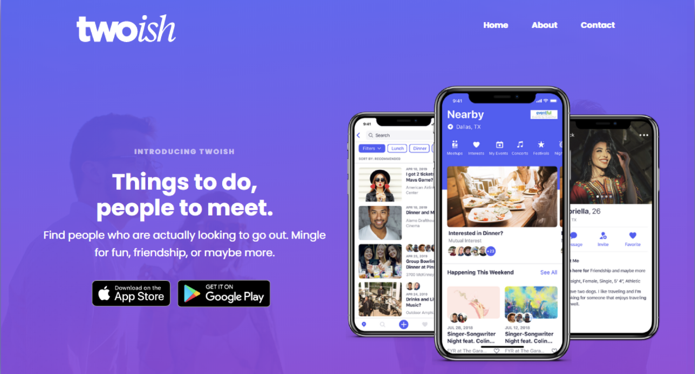

At A Glance
Roles/Skills:
Tools:


Introduction
Twoish's founder was a Product Lead at The Match Group, and had a vision of transforming the dating app scene away from swiping to focus more on what brought on meaningful human interactions- meeting in person. The problem? He needed a new designer to help him complete the app, and that's where I came into the picture. Our goal was to complete the design and development of the application so that we can launch the app on the Apple App Store.
Work
Challenge #1: Market Research and Strategy
There was a significant number of Facebook groups centered around dating and meeting new people with common interests, and the founder wanted to build a digital experience focused on this market. My task was to find out which cities had the most active groups in the category so we could focus on our launch on those specific cities. As a result of my research, we gathered evidence that Los Angeles, Austin, and Chicago were the best cities to target for launch.
Challenge #2: Designing Everything
Any changes under direction from the founder, from user interface overhauls to small edits on screens, was my responsibility. I was also responsible for prototyping new user flows within Adobe XD, managing the design files, and preparing any design assets that the development team needed or requested.
Specifically, I helped create the user experience and interface of the "Create Meetup" user flow, which was a core element of the app. Users were prompted with questions to help guide them to create a public or private meetup so they could begin meeting people through the app. At the time, we were working out of a co-working space and I was able to conduct usability tests of the app with members within the space.
Challenge #3: Website and More
Along with all my other creative responsibilities within the app, I also created the website for Twoish. An early challenge came when we discovered we were receiving a significant amount of unexpected traffic from countries like India and Denmark. In order to remedy this, I implemented a Cloudflare solution to firewall IP addresses from these countries so that we the data we were receiving from Google Analytics was a more accurate represenation of our target market (the app was US only).
Conclusion
Twoish was released in September 2019 to a modicum of success: the user base grew slowly to around 10,000 users in February of 2020. Unfortunately, the COVID-19 pandemic greatly hindered the growth of the app, and it's yet to be seen how successful the project can be.
What I've Shown
My work with Twoish showed that I'm someone who solves problems and get things done. It shows the versatility of my skillset while also demonstrating my ability to execute quality and precise design work. There were so many situations where I was asked to do something I haven't done before, and sometimes asked to do things I had no idea how to do, but I took it as a challenge, used my critical thinking skills, and got the job done.
Lessons Learned
As far as lessons, although we thought we did an adequate amount of research, there is always more that you could learn through surveys and additional research. The Founder and I both agreed that more time could have been spent on the initial stages of user discovery. While some degree of guesswork and hypothesis is inevitable for an agile startup, talking to “over 300 potential users” would have made the design process go a lot smoother and helped us centered the user experience on what users actually wanted.
Also, with so many design assets, it was really easy to lose track of icons, screens, icons, mockups, etc. I unfortunately found myself swarmed with so many files that eventually I decided to put in time and effort to organize all the assets so it was easier for me to use. It turns out that there is an ideal user experience for file organization as well. As a result, the work I did with Twoish forced me to properly utilize folders and file names when exporting assets so that everything is organized and easy to find.